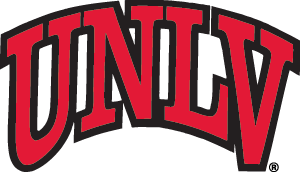

Programs
Explore graduate options
Help prospective graduate students understand which programs may fit their goals before they start a full application.

UNLV Graduate Admissions
AI-powered support for graduate applicants
Graduate recruitment demo
This page is a focused graduate admissions chat experience for testing questions about programs, application steps, deadlines, and funding in a more grad-specific context.
Example questions
Tap any question to copy it, then paste it into the grad chat.
This page intentionally does not send the hidden `Page_URL` pre-chat field.
Programs
Help prospective graduate students understand which programs may fit their goals before they start a full application.
Application
Use the chat to answer common questions about materials, recommendations, deadlines, and test expectations.
Funding
Let visitors ask about assistantships, scholarships, and other funding paths early in the graduate decision process.